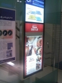

・街のおねえさんは総じて髪と足が御綺麗である。写真のようにじっと立っているだけの方でさえ＾＾ ・仕事がうまく行こうが行くまいが終わった後の晩飯のビールはうまい。１日目黒恵比寿、２日目エベレスト、３日目モレッティ。 ・建物やインフラが変わろうと、街が持つ基本的な肌触りはそんなに変わらない気がする。 ・同じく久々に人ごみの中を歩き、体格やファッションその他いろいろ変わったところはあるが、やはり変わらない感覚がある。
最近、こういう生活のため服が足りなくなってきているので、帰りは慣れと便利さで銀座を回ってシャツとネクタイを仕入れることに。よく行くところからしばらく行ってないところ、はじめてのところなど軽く回ってみたが、今一から今五くらいの感触。ふと見るとサラリーマンになりたての頃以降御無沙汰の某店が目に入ったので入る。
マヌカンのおねえさんと話しているうちに「最後にここで買い物したのは２５年くらい前ですね～、その頃の雰囲気なんて全然ピンとこないでしょ？」「私５歳くらいですね…。でも、父親が好きでよく来ていたみたいです」「へー、そしたら僕より前、アイビーの時代だねきっと」「そうそう」てな話から、場所柄もあり頭の中は一気に２５年前にタイムスリップ。そういえば、近くにははじめてアリオ・オリオのベーコン添えを食べたチェーンの銀座店があるよなあ。まだあるかな行ってみっか！
てなわけで、晩飯はアリオ・オリオに（このチェーンのウリね）グリーンピース・サラダにモレッティとあいなった。
つい１～２年前は高校時代に戻ってそっからやりなおしてる感じ、と公言してたが、その後は暗黒の大学・サラリーマン時代に移行するのは考えてみれば、当然だな。
再開した高校時代が幸い暗黒でなかったのと同じく、再開した大学・サラリーマン時代も願わくば暗黒にならないでほしいもの＾＾；